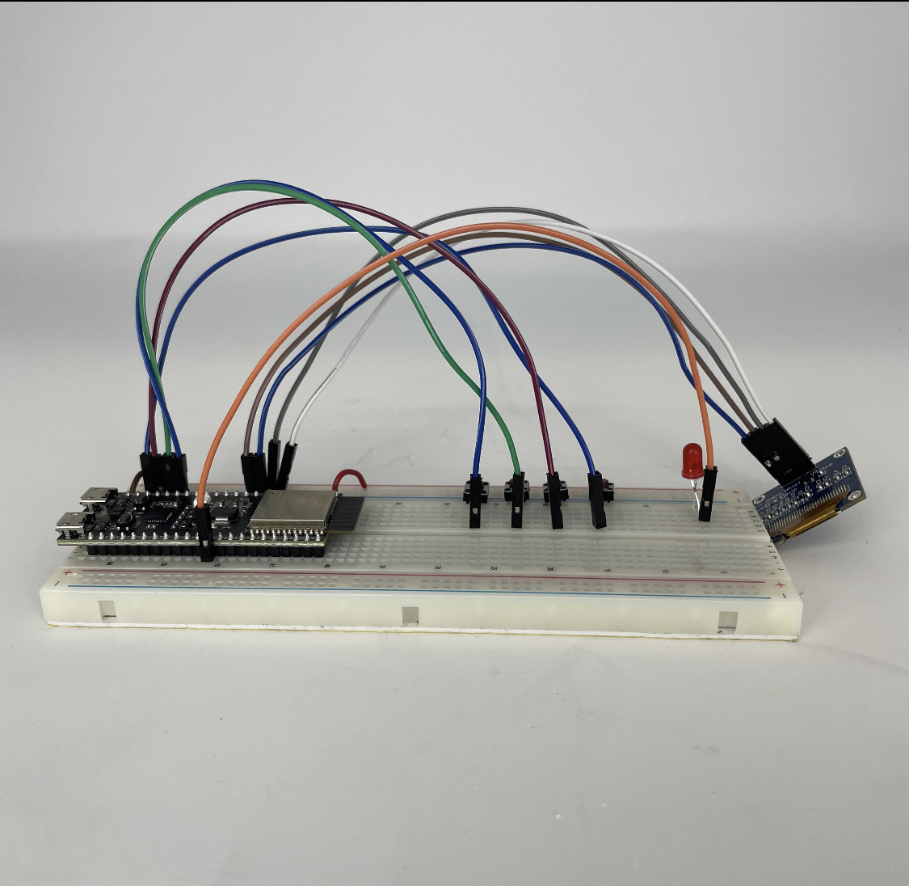

Introduction
This week the goal was to work with with communication devices (both Wired and Wireless). These are both super interesting and useful
to work with for increasing the amount of information your systems can handle, as well as to all for communication between different
microcontrollers.
The wired communication methods for controller to devices was something I had some experience with already. Even after reading it a
ton of times I still couldnt tell you the real differences between I2C and SPI protocols, but it has some semi significant difference.
But the wired communication between controllers was super silly and goofy because you basically just connect their ports and send inputs
to 1 and outputs to the other. I dont exactly know when I would have a use case for that, but I hope I do because I think it is
hilarious.
As for wireless communications, there are three major methods: Internet (LAN or Remote Server), Bluetooth, or Radio. The main ones we worked
with were Internet based, which will be good for doing local based communication or far away. If you are local, then it is as simple as
to the same wifi and creating a LAN page that both devices can access and then interpret information to do different things. The more
sophisticated version is to use some sort of genuine webpage that the microcontrollers will ping for information, thus can be done with
any microcontroller connected to the internet anywhere!
The Vision
The other neat thing about this week's project is working in groups! So obviously we went with the dream team Ashley and Bella (Center
Table Squad for the win). Every week when we arrive at class, we find it important to know how everyone is doing (one might say, what
the ~vibes~ are). So for the project for the week, we wanted to create a set of devices that would communicate our vibes for eachother.
The general structure for our devices was to have a "call" button that would signal all of the other devices to have their user input a
response. The users would choose between (good, neutral, or bad) and then each device would have a display that would output each
user's vibe.
Hardware
The hardware part was the first step of the process. Thankfully, at this point we are all getting pretty good at it! The implementation
thankfully wasn't too tricky - the OLED was new for me, and by default the esp32 will use datalines 21 and 22 to relay OLED I2C communication.
This is slightly tricky because the eps32s2 dev boards we use for class dont have the 22 pin out (for some reason it didn't make a cut). But
with some quick alterations in the code, I was able to get that wired up. I also added an external library for button's that allow for super
easy programming implementation of the button functions (it basically takes 2 lines of code that are super easy to read to check if the
button has been pressed), this is probably the first time I have been impressed by the ability to have abstraction in C. Then finally the LED
was a joke at this point. This is the general wiring that we ended up using for each of the devices, and then we just replicate everything for each
of the devices.

The next hardware piece was to make the button caps (we ended up going with smiley faces). It was a pretty simple laser cutting job for that.
So we could finally move on to the final system which was the box to hold each of the devices. We found a nice website that can generate SVG
files of notched boxes for an arbitrary set of dimensions. So that made things super easy on our end. So after like 2 failed attempts of inputting
the wrong board thickness, we had 2 made boxes to hold our devices! The SVG file is linked here.
{kind=link}
Communication Protocol
The last part actually programming everything up with a networks to make the system work. The blunt of this was handled by Bella (clutch), and we
used a system called Firebase. Essentially there is a firebase table with a value for each of the devices, either 0 (no vibes) or 1,2,3. When the
device's buttons are pressed, it issues a command to update its entry in the firebase table. Then it constantly pulls the values of the table in order
to determine what to display on the OLED. And thats pretty much all there is to it. A few moving parts that need to go together semi seamlessly to work
well, but once its all said and done, the process and product is super intuitive in functionality. Then in terms of creating more devices, it's as simple
as wiring up a new box, changing just a few lines (to let the controller know which box it is) and boom they are all good to go! The Arduino code is linked
here.

I am happy with how it turned out, and honestly this was the most developed project that I have done thus far. Getting to actually create a complete system
that I can say is a "mostly final design" is pretty cool, and its good to refresh on some of those skills from previous weeks.